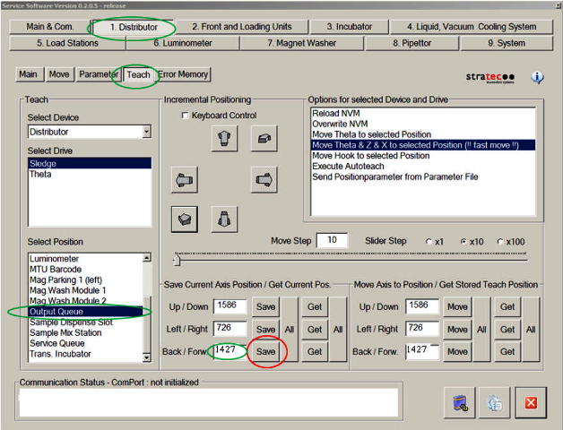
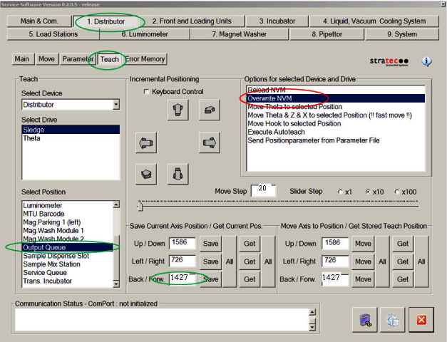
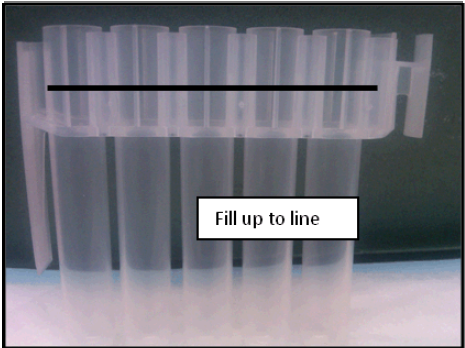
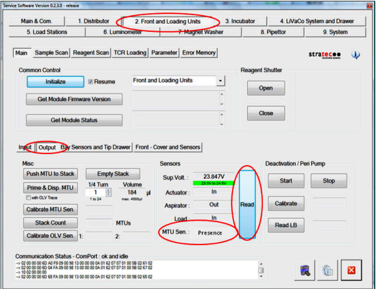
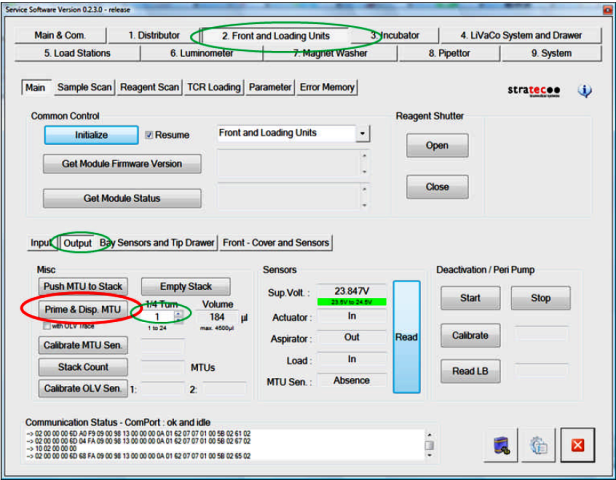
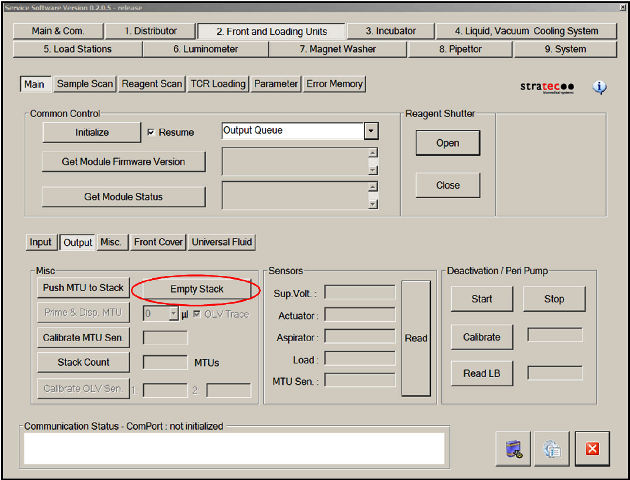
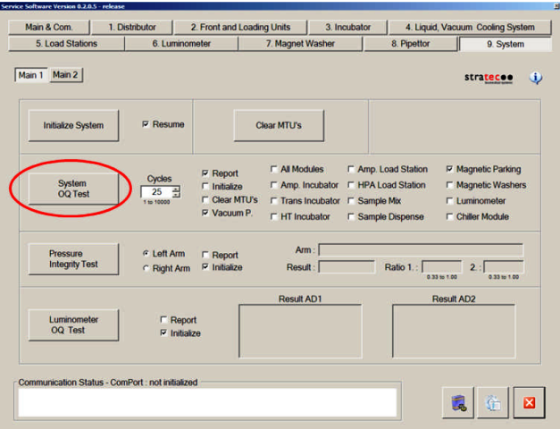

Distributor to OQ MTU Handoff Position Adjustment
Parts and Materials Required
- Proper PPE
- Panther Service Software
Time Required
- 1.5 hours for Service Procedure and Verification
Procedure
- Ensure that the Service Drawer is fully closed and latched.
- Check to be sure the Output Queue MTU
 Multi-tube unit—Container used to process tests in the instrument. An MTU contains five separate reaction tubes. The MTU is moved through the instrument by the linear distributor and includes five tiplets for pipettiing to be used in the mag wash station. Presence Sensor is functioning correctly:
Multi-tube unit—Container used to process tests in the instrument. An MTU contains five separate reaction tubes. The MTU is moved through the instrument by the linear distributor and includes five tiplets for pipettiing to be used in the mag wash station. Presence Sensor is functioning correctly:- Visually confirm that no MTU is present at the Output Queue load position.
- If the MTU Sen field reads Presence, clean the sensor before moving to the next step.
- In Service Software, initialize the Distributor and Output Queue.
- Prepare for manual teaching of the Distributor by setting the Distributor Authorization Code:
- Retrieve the currently saved Distributor–Output Queue teach parameters:
- Manually adjust the Distributor teaching:
- Note that the current hook position is now 20 steps less (1427 in this example). In the Save Current Axis Position/Get Current Pos. section, select the Save button next to Back/Forw. to save the current position to the Volatile Memory.

- Save the new teach position to the Non-Volatile Memory by double-clicking Overwrite NVM in the Options for selected Device and Drive section. This permanently saves the new Distributor teach parameters.

- Verify that the Output Queue is able to detect MTUs with more than 4 mL of fluid:

- Using the Distributor, retrieve the MTU from the Service Queue and place the MTU at the Output Queue.
- In Service Software, navigate to 2. Front and Loading Units, Output. In the Sensors section, select the Read button to check the output Queue MTU presence sensor.

- The sensor should ready Presence. If the sensor reads Absence, the Distributor placement position of the MTU on the OQ needs to be further adjusted—repeat steps 5–9, but add 20 steps to the Distributor teach position (in step 5f) instead of subtracting 20 steps.
- Once the final Distributor hook teaching is completed, perform the following steps to make sure the Output Queue MTU Loader is able to grab the MTU from Tube 2 and load it to the rails without issues:
- Confirm that the MTU placed on the Output Queue in step 9 has been removed.
- Using the Distributor, place an empty MTU on the Output Queue.
- In Service Software, navigate to 2. Front and Loading Units, Output tab. Select the Prime Operation of pumping fluid through tubing to ensure proper and consistent fluid delivery (remove air from the tubing, etc.). & Disp. MTU button. This causes the Output Queue to grab the MTU and move it to the stack.

- As the Output Queue Load Hook grabs the MTU, confirm that the Hook fully snaps into place when it grabs the MTU. If the Hook does not fully snap in, or grabs the wrong tube (expected to grab tube #2), then the Distributor Hook teaching needs to be readjusted.
- Instead of changing the value by 20 steps as instructed in step 6, only change the teaching by 10 steps, and repeat steps 7–10.
Verification
-
Cycle at least 25 MTUs through the Output Queue:
-
Open Service Software.
-
Initialize the Output Queue, Linear Distributor and Input Queue.
-

-
- In the System tab, perform a System OQ Test.

-
Select 25 cycles.
- Deselect Initialize (all modules that will be used are already initialized).
-
Deselect All Modules, and select Magnetic Parking.
-
Select Report.
-
Select System OQ Test.
- Completely fill the Input Queue with 25 MTUs when prompted.
-
- As the Distributor places MTUs on the Output Queue, observe the Output Queue, and confirm that the Output Queue Load Hook fully snaps into place each time it grabs an MTU. If the Hook does not fully snap in, or grabs the wrong tube (expected to grab tube #2), then the Distributor Hook teaching needs to be readjusted- see step 10e.
- Ensure that the Output Queue and system function properly during this unload process.
- Perform 2 Full Primes on the system using Panther System software:
 button at the top of the page to send feedback, comments, or change requests.
button at the top of the page to send feedback, comments, or change requests.